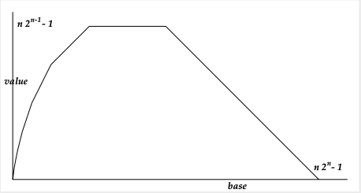

![[picture of a maze]](img/maze.gif) Programming Pearls
Programming Pearls
Programming Pearls
Programming Pearls
p(c){putchar( c);}f(x,y,m){
(y=m- abs(m -y))- m&&m-
x?f(x <m?y:x&m,x<m? x:y,m
/2):p (x-m-
1&&y?32:64);} main(z){for(z
=N*N; z--;p
(z%N?32:10))f (z%N,z/N,N);}
compiles with -DN=1, -DN=3, -DN=7, or -DN=15 (powers of two minus one) to produce outputs
@ |
@ @ @ @ @ @ @ |
@ @ @ @ @ @
@ @ @ @
@ @ @ @ @
@ @
@ @ @ @ @ @
@ @
@ @ @ @ @ @
|
@ @ @ @ @ @ @ @ @ @ @ @
@ @ @ @ @ @ @ @
@ @ @ @ @ @ @ @ @ @
@ @ @ @
@ @ @ @ @ @ @ @ @ @ @ @
@ @ @ @
@ @ @ @ @ @ @ @ @ @ @ @ @
@ @
@ @ @ @ @ @ @ @ @ @ @ @
@ @ @ @ @ @
@ @ @ @ @ @ @ @ @ @ @ @
@ @
@ @ @ @ @ @ @ @ @ @ @ @
@ @ @ @ @ @
@ @ @ @ @ @ @ @ @ @ @ @
|
f(y,x,m){return x?x=abs(~m+x),y
>m?-f (x,y, m):x& m?f(y
,x,m/ 2):m==y&y:-2; }main
(y,x) {for(
x=0;N/y;)y+=20/ putchar("\n| _"
[++x& !f(y+
1,x&N,N)|f(y-x %2,x&N,N)+2]);}
produces prettier output (with N=3,7,15,31):
_ | | |
_ _ | |_| | |_ _| _| |__ |
_ _ _ _ | |_| | | |_| | |_ _| |_ _| _| |_____| |_ | ___ ___ | |_| _| |_ |_| _ |_ _| _ | |___| |___| | |
_ _ _ _ _ _ _ _ | |_| | | |_| | | |_| | | |_| | |_ _| |_ _| |_ _| |_ _| _| |_____| |_ _| |_____| |_ | ___ ___ | | ___ ___ | |_| _| |_ |_| |_| _| |_ |_| _ |_ _| _ _ |_ _| _ | |___| |___| |_| |___| |___| | |_ ___ ___ ___ ___ _| _| |_ |_| _| |_ |_| _| |_ | _ | _ |_ _| _ | _ | |_| |_| | |___| |___| | |_| |_| _ _ | ___ ___ | _ _ | |_| | |_| _| |_ |_| | |_| | |_ _| _ |_ _| _ |_ _| _| |___| |___| |___| |___| |__ |
char*M,A,Z,E=40,J[40],T[40];main(C){for(*J=A=scanf(M="%d",&C);
-- E; J[ E] =T
[E ]= E) printf("._"); for(;(A-=Z=!Z) || (printf("\n|"
) , A = 39 ,C --
) ; Z || printf (M ))M[Z]=Z[A-(E =A[J-Z])&&!C
& A == T[ A]
|6<<27<rand()||!C&!Z?J[T[E]=T[A]]=E,J[T[A]=A-Z]=A,"_.":" |"];}
Note that the constant 27 assumes a 31-bit random number generator,
and needs to be replaced with 11 if rand() produces 15-bit numbers
instead. Modern C compilers don't allow constant strings to be overwritten,
which can be avoided by changing the first line to
char M[3],A,Z,E=40,J[40],T[40];main(C){for(*J=A=scanf("%d",&C);
If you want to know how this program achieves its mystery, read
this.
for (i = j/2; j > 1; t[l] = k) {
if (i) k = t[i--]; else { k = t[j]; t[j--] = t[1]; }
for (l = i + 1; (m = l + l) <= j; t[l] = t[m], l = m) {
if (m < j && t[m] < t[m+1]) m++;
if (t[m] <= k) break;
}
}
max = 1 << no_of_discs;
for (x = 1; x < max; x++)
printf("move a disc from %d to %d\n", (x&x-1)%3, ((x|x-1)+1)%3);
main=mapM_(print.gs)[0..]where gs=g 2 g b 0=b;g b n=g c$s 0 n-1where s _ 0=0;s e n=mod n b*c^s 0 e+s(e+1)(div n b);c=b+1The values gs(0)=2,gs(1)=3,gs(2)=5,gs(3)=7 seem pretty modest and in fact suspiciously familiar.
But the function really takes off at gs(4)=3 * 2^402653211 - 1,
which is the
Woodall number W402653184, divisible by 29.
Here's a Postscript picture showing how values grow
as a function of the base for this Goodstein sequence (all bigger ones look
the same, only differing in scale).

A more legible representation of function g is
g b 0 = b
g b n = g c ((s 0 n) - 1) where
s _ 0 = 0
s e n = (n `mod` b) * c^(s 0 e) + (s (e + 1) (n `div` b))
c = b + 1
Small values of gs() can be expressed in terms of a close analogue
of Ackerman's function,
the finite part of this fast-growing hierarchy:
f0(n)=n+1
fk+1(n)=fkn(n).
Then gs(4)=f3(3)-1, gs(5)=f4(4)-1, gs(6)=f6(6)-1 and gs(7)=f8(8)-1.
#include <stdio.h>
#include <stdlib.h>
#define DO(P,R,I,M,E,S,i0,v0,i1,v1,i2,v2,i3,v3,i4,v4,i5,v5,i6,v6,i7,v7) k=P;\
if (!(sieve[n] & (1<<R)))\
{ printf(" %ld",30*n + bits[R]);\
e = eos - I*n - M;\
for (m = sieve + (30*n + E) * n + S; m < e; m += i0)\
{ *m |= (1<<v0); *(m += i1) |= (1<<v1);\
*(m +=i2) |= (1<<v2); *(m += i3) |= (1<<v3);\
*(m +=i4) |= (1<<v4); *(m += i5) |= (1<<v5);\
*(m +=i6) |= (1<<v6); *(m += i7) |= (1<<v7);\
}\
if (m < eos) { *m|=(1<<v0);\
if ((m += i1) < eos) { *m |= (1<<v1);\
if ((m += i2) < eos) { *m |= (1<<v2);\
if ((m += i3) < eos) { *m |= (1<<v3);\
if ((m += i4) < eos) { *m |= (1<<v4);\
if ((m += i5) < eos) { *m |= (1<<v5);\
if ((m += i6) < eos) *m |= (1<<v6);\
} } } } } } }
char bits[] = {1,7,11,13,17,19,23,29} ;
int main(int argc, char *argv[])
{
unsigned long p,q,r,k=0,n,s;
char *m,*e,*eos,*sieve;
long bytes,atol();
if (argc!=2) printf("usage: %s (<bytes_used> or -<maxprime>)\n",*argv), exit(0);
if ((bytes=atol(argv[1])) < 0) bytes = 1 + (-bytes)/30;
if (!(sieve = calloc(bytes,1))) printf("Out of memory.\n"), exit(0);
if (bytes > 30) for (k = r = (bytes-1)/30; (q = r/k) < k; k >>= 1) k += q;
eos = sieve + bytes; s = k + 1; *sieve = 1; printf("2 3 5");
for (n = p = q = r = 0; n < s; n++)
{ DO(p++,0,28, 0, 2, 0,p,0,r,1,q,2,k,3,q,4,k,5,q,6,r,7); r++;
DO(q++,1,24, 6,14, 1,r,5,q,4,p,0,k,7,p,3,q,2,r,6,p,1); r++; q++;
DO(p-1,2,26, 9,22, 4,q,0,k,6,q,1,k,7,q,3,r,5,p,2,r,4); r++;
DO(q-1,3,28,12,26, 5,p,5,q,2,p,1,k,7,r,4,p,3,r,0,k,6);
DO(q+1,4,26,15,34, 9,q,5,p,6,k,0,r,3,p,4,r,7,k,1,p,2); r++;
DO(p+1,5,28,17,38,12,k,0,q,4,r,2,p,5,r,3,q,7,k,1,q,6); r++; q++;
DO(q++,6,26,20,46,17,k,5,r,1,p,6,r,2,k,3,p,7,q,0,p,4); r++;
DO(p++,7,24,23,58,28,r,0,k,7,r,6,q,5,p,4,q,3,p,2,q,1);
}
printf(" ...");
for (p = bytes - s; p < bytes; p++)
for (k = 0; k < 8; k++)
if (!(sieve[p] & (1<<k))) printf(" %ld",30 * p + bits[k]);
for (p = 0, n=3; p < bytes; p++)
for (k = 0; k < 8; k++) n += !(sieve[p] & (1<<k));
printf("\n%ld primes found\n", n);
exit(0);
}